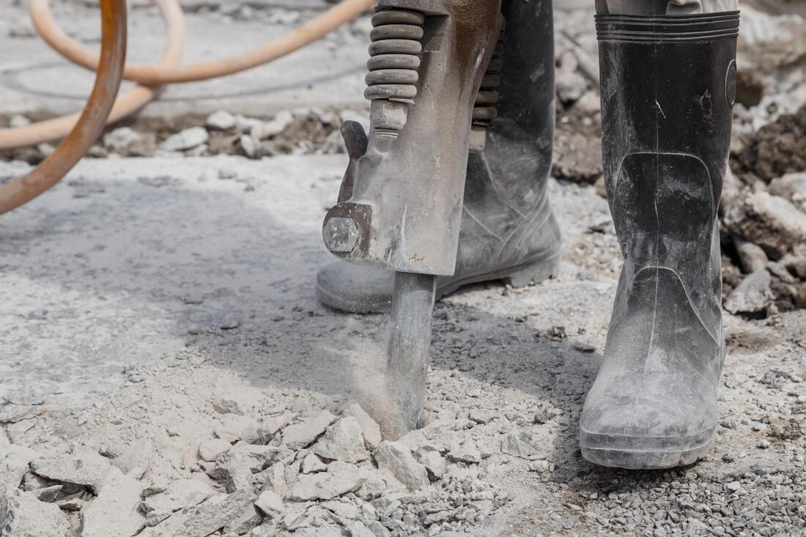

Measure the drive
We check length, width, garage height, sidewalk elevation, and where water goes now. Photos help us call you back. They are not a substitute for standing on the lot.
Concrete Driveways
A concrete driveway in Youngstown has to live with freeze-thaw, road salt, and the clay soils common through the Mahoning Valley. Most of the calls we get are replacements: the old slab is scaled, cracked into pieces, or pitched back toward the garage. We measure the drive, the garage lip, and the sidewalk before we talk about a price.


The new drive has to meet the garage without a trip lip and still fall away from the house. On a short Youngstown driveway that can be a tight bit of grade. We set that before forms go in, not after the concrete is down.
We check length, width, garage height, sidewalk elevation, and where water goes now. Photos help us call you back. They are not a substitute for standing on the lot.
Broken concrete is broken out and hauled away when it cannot stay. A sound panel can sometimes remain and be tied to the new work. We do not pour a thin layer over a slab that is still moving.
The stone base is compacted, forms are set, and the concrete is placed and finished. Control joints are cut or tooled so the slab has a place to crack in a straight line.
Passenger cars stay off for several days. Cold nights make that longer. We will tell you the wait before we leave. The slab keeps gaining strength after that.
We do not publish a price per square foot. These are the items that move a quote once we see the lot.
A passenger-car drive is often about 4 inches over a compacted base. A truck, a boat, or a dumpster pad needs more thickness. We set that from how you use the drive.
Breaking out a thick old slab, and getting the debris off a tight lot, is a large part of many replacement estimates.
If the truck cannot reach the forms, concrete moves by buggy or pump. Narrow side yards in older neighborhoods change the price more than the finish does.
Wire or rebar, and the joint layout, depend on the shape of the drive and the base under it. A long, narrow drive is jointed differently from a wide apron.
Broom finish is the usual driveway surface. A stamp, a thickened edge, a drain, or rebuilding the swale beside the drive are extras we price only if the lot needs them.
For cars, about 4 inches of concrete over a compacted aggregate base is the usual residential section. Heavier vehicles need a thicker slab, sometimes only in the parking area. We will not quote a thickness from the curb. It depends on the soil, the base, and what you park.
Yes, that is part of the layout. The drive should meet the slab at the garage without holding water against the door, and it still needs to drain to the street or a yard swale. If the old drive was raised with overlays, we may have to come down to a workable height.
Broom finish is the standard. It sheds water, takes salt and shovels, and is the right surface for most drives. Stamping is available when you want a pattern, with a texture you can still shovel. See the stamped concrete page if that is the look you are after.
If the slab is failed, we break it out and haul it off. If one panel is sound and at the right height, we can sometimes leave it and dowel the new concrete to it. Leaving a moving slab in place and covering it is how a new surface cracks along the old lines.
Plan on several days for a passenger car, and longer when the nights are near freezing. Walking on it comes first. We set the actual day from the temperature and the mix before we leave, rather than promising a clock time in advance.
Salt and freeze-thaw are hard on any exterior concrete in Youngstown. Air-entrained concrete, joints, and a sound base are how a drive gets through winter. They do not make the surface immune. Go light on deicers the first winter, keep fertilizer off the slab, and shovel with a plastic blade when you can.